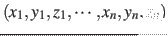

The cartesian {...} block defines a component returning a flat vector containing
the Cartesian coordinates of all participating atoms, in the order
.
This component accepts the following keyword:
-
atoms
 Group of atoms
Group of atoms
Context: cartesian
Acceptable values: Block atoms {...}
Description: Defines the atoms whose coordinates make up the value of the component.
If rotateReference or centerReference are defined, coordinates
are evaluated within the moving frame of reference.
Jérôme Hénin
2015-03-03